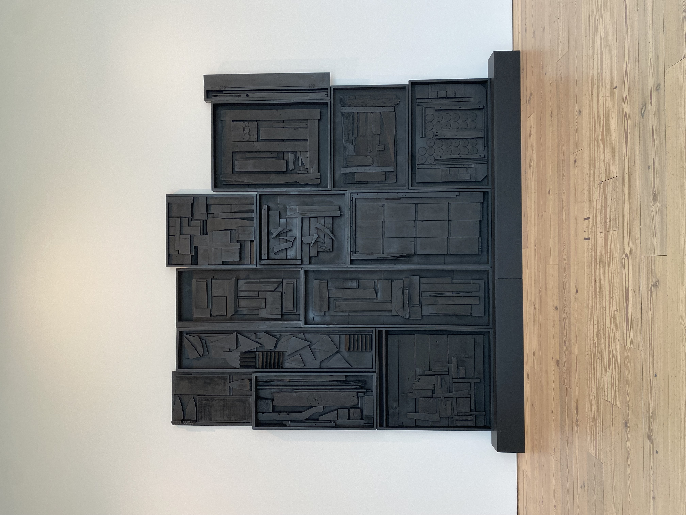
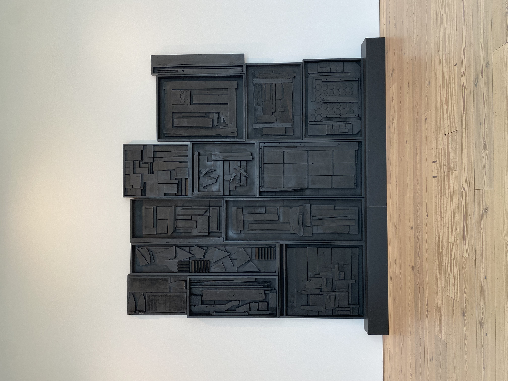
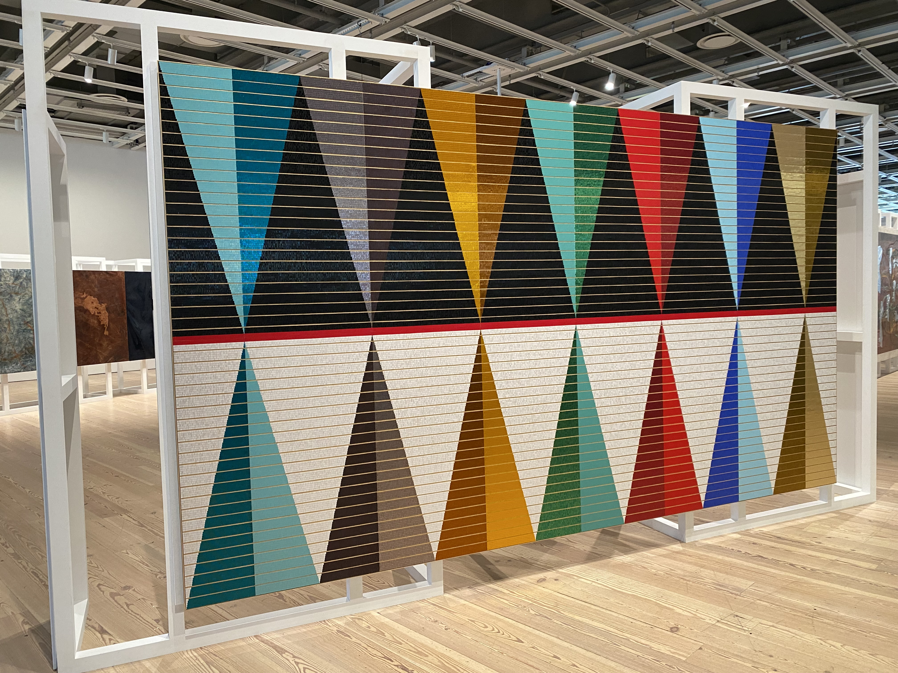
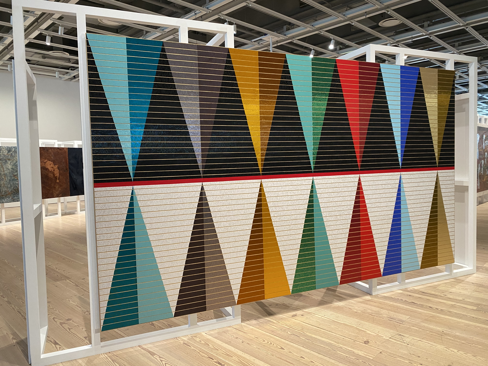

The Whitney Museum was founded to collect, preserve, interpret, and exhibit progressive American art, and support new artists and emerging art forms. It easily stands apart from its New York contemporaries due to its singular mission of acquiring and celebrating the works of great American artists, regardless of style. Through its annual and biennial exhibitions, the Whitney has continually maintained its reputation as a high-profile venue for relatively unknown artists to show their work alongside the works of established artists like Edward Hopper, and Stuart Davis. Additionally, the Whitney Museum has not only set out to seek and acquire important contemporary art but also to teach and nurture future contributors to the arts as well.
 

 

Images of artwork taken by Jason Oglesby.
Image citation of museum image: https://stock.adobe.com/images/new-york-ny-u-s-a-whitney-museum-of-american-art/334074609?prev_url=detail New York, NY, U.S.A. - Whitney Museum of American Art Created by vacant.